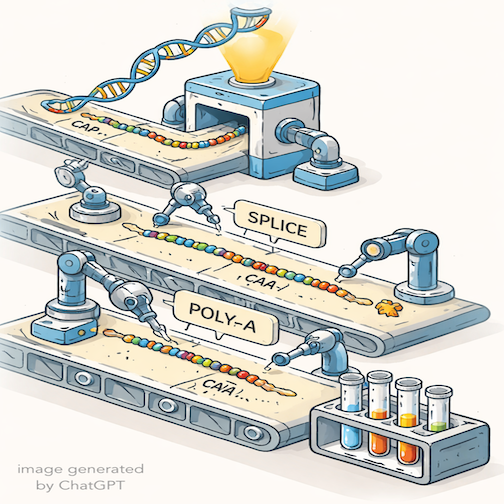
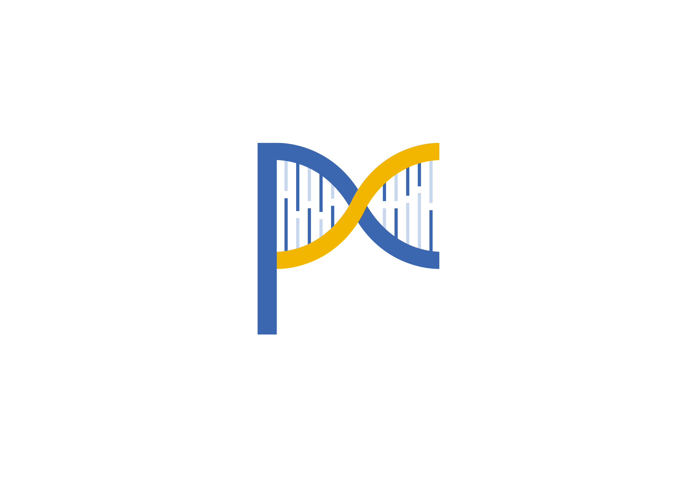

About
Learn About Us

The Efficiency of mRNA Biogenesis
We aim to understand how RNAs are regulated through the lifecycle of an RNA molecule. To do so, we develop and apply high-throughput approaches to study the kinetics, fidelity, and coupling of transcriptional and RNA processing mechanisms.
Our lab combines experimental & computational genomic tools to probe steps of RNA maturation. We are always looking for enthusastic researchers to join us!
Functional Genomics
genetics, genomics, molecular & cellular biology
Quantitative Analyses
bioinformatics, mathematical modeling, machine learning
Research
Brief Overview of our Research
Team
Meet the Group
Athma Pai
Principal Investigator

Ann Latino
Administrative Coordinator{kind=link}

Ezequiel Calvo-Roitberg
Graduate StudentKelly Cochran
Postdoctoral Researcherjoint with Schärfen lab
{kind=link}

Nida Javeed
Research Associate
Eva Jazbec
Graduate Studentjoint with Sontheimer lab

Eraj Khokhar
Postdoctoral Researcher
Marina Krykbaeva
Postdoctoral Researcher
Jesse Lehman
Graduate StudentYe Liu
Postdoctoral Researcher{kind=link}

Joseph Paquette
Graduate Student
Valeria Sanabria
Graduate StudentPublications
Read Our Publications
- Selected
- Coupling
- Fidelity
- Kinetics
- Collaborative
- All Papers
{kind=link}
{kind=link}
{kind=link}
{kind=link}
{kind=link}

{kind=link}
{kind=link}
{kind=link}
{kind=link}
{kind=link}
{kind=link}
{kind=link}
{kind=link}
{kind=link}
{kind=link}
{kind=link}
{kind=link}
{kind=link}
{kind=link}
{kind=link}
{kind=link}
{kind=link}

{kind=link}
Software
Computational Resources
We often develop new computational approaches or pipelines and make them freely available to the community. NOTE: we are not software developers and most of these code repositories have not been actively maintained since publication.
Photos
Life in Lab and Beyond
Contact
Let's Connect
Our Address
Albert Sherman Center
368 Plantation Street, AS5-2057
Worcester, MA 01605
Email Address
info@thepailab.org
Locations:
Wet Lab: ASC5-2003/2004
Dry Lab: ASC5-2053/2055
AAP Office: ASC5-2057